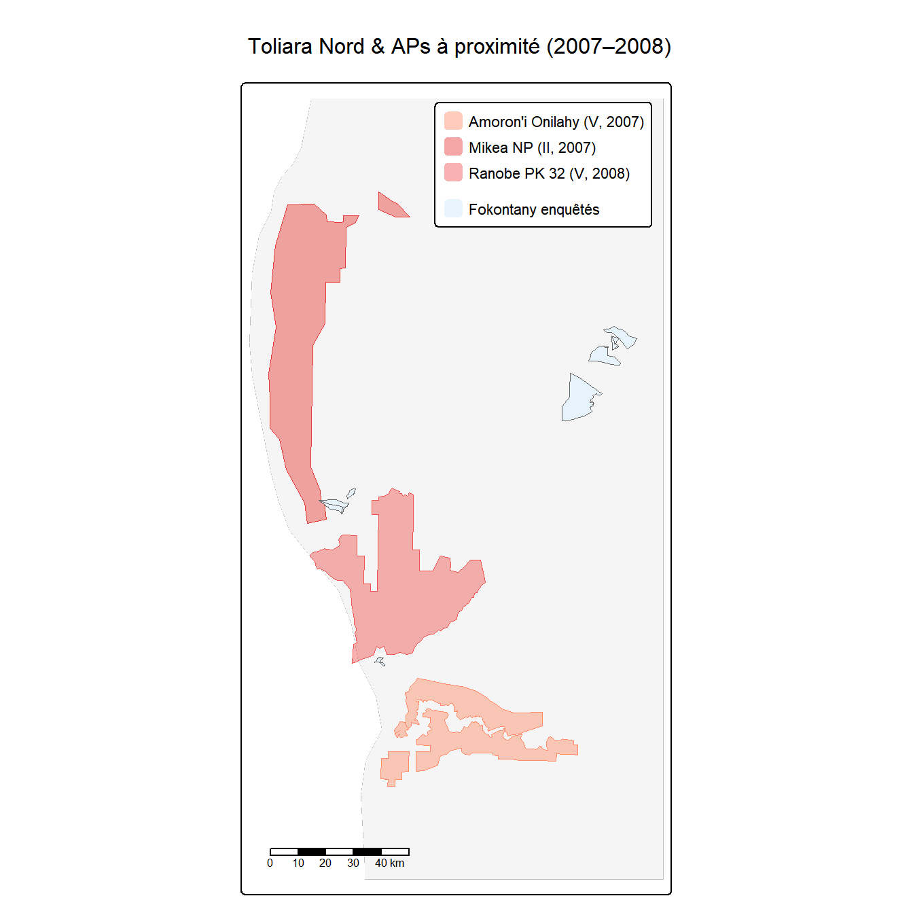
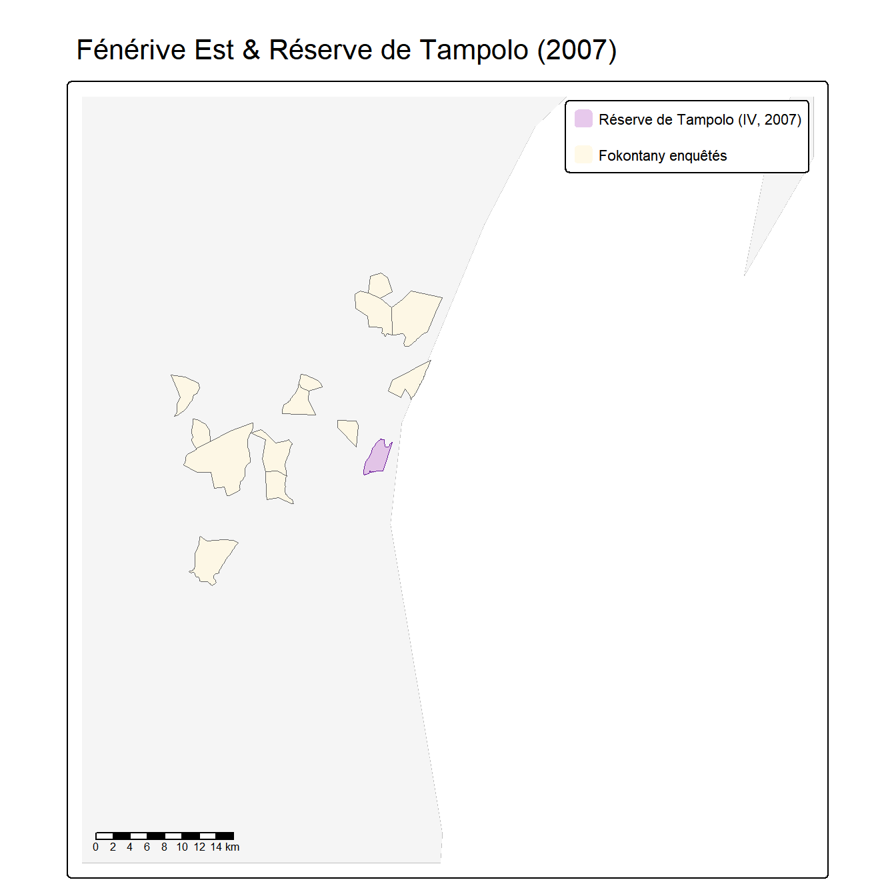
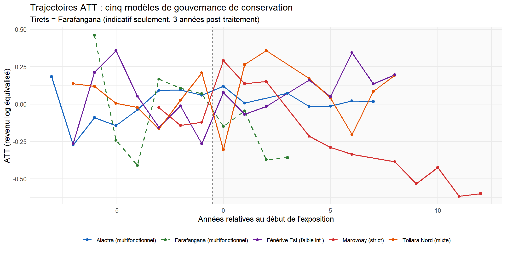
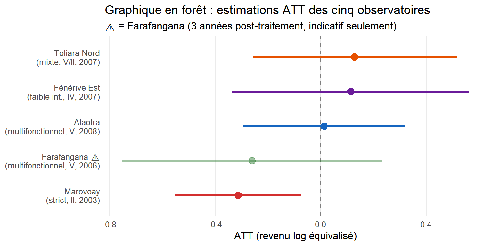

5 Extensions
Trois paires observatoire–AP supplémentaires
La comparaison à deux cas du Chapitre 4 — enforcement strict à Ankarafantsika versus conservation participative au Lac Alaotra — limite la validité externe. Ce chapitre étend l’analyse à trois observatoires ruraux supplémentaires que l’audit du pool de donneurs (Annexe B) a identifiés comme eux-mêmes adjacents à des aires protégées créées pendant la période d’étude :
- Farafangana (obs. 15) : adjacent au Corridor Forestier Ambositra-Vondrozo (catégorie V UICN, septembre 2006). Fenêtre d’enquête : 1999–2008 (3 années post-traitement seulement).
- Toliara Nord (obs. 23) : adjacent à Amoron’i Onilahy (catégorie V UICN, janvier 2007), Parc National de Mikea (catégorie II, avril 2007) et Ranobe PK 32 (catégorie V, décembre 2008). Fenêtre d’enquête : 1999–2014.
- Fénérive Est (obs. 24) : adjacent à la Réserve de Tampolo (catégorie IV UICN, août 2007), une petite forêt de recherche (~7,3 km²) gérée par ESSA-Forêts. Fenêtre d’enquête : 1999–2014.
Ces trois observatoires passent de contraintes dans le pool de donneurs à des unités exposées informatives. Ensemble avec Marovoay et Alaotra, ils permettent un examen à cinq cas de la façon dont le type de gouvernance de conservation, l’intensité d’application et la taille de l’AP façonnent les résultats de revenu des ménages. Les résultats de ces trois sites doivent toutefois être interprétés avec prudence, car les fenêtres post-traitement plus courtes limitent la précision des estimateurs.
Une note méthodologique : le pool de donneurs dans ce chapitre est restreint aux six observatoires propres (Antsirabe, Antsohihy, Tsiroanomandidy, Ambovombe, Mahanoro, Itasy). Les trois donneurs aussi exposés utilisés au Chapitre 4 sont maintenant traités comme unités exposées. Les estimations ATT pour Marovoay et Alaotra différeront donc légèrement de leurs équivalents du Chapitre 4.
6 Sites d’étude
6.1 Farafangana et le Corridor Forestier Ambositra-Vondrozo
Le CFAV (~300 km, catégorie V UICN) longe l’escarpement oriental des hautes terres. Un décret de protection temporaire a été émis le 15 septembre 2006 dans le cadre de l’expansion SAPM post-2003. Le statut catégorie V implique une réglementation de l’utilisation des terres à la lisière forestière — principalement des restrictions sur le tavy et la production de charbon de bois dans les zones tampons — plutôt qu’un enforcement d’exclusion.
L’observatoire de Farafangana est situé sur la plaine côtière sud-est ; sa commune la plus proche (Mahatsinjo) borde le CFAV à ~14 km. Une complication : la Réserve Spéciale de Manombo (catégorie IV UICN, 1962) se trouve à ~12 km d’une deuxième commune. Manombo étant antérieure à la période d’étude avec des limites et une gestion inchangées, elle constitue une condition de fond constante absorbée dans l’effet fixe d’unité. L’ATT pour Farafangana identifie donc l’effet supplémentaire sur le revenu du décret CFAV de 2006.
Tous les sites d’enquête sont exposés au niveau de l’observatoire à partir de 2006 ; aucune division intra-observatoire n’est possible. Avec seulement 3 années post-traitement (2006–2008), les estimations gsynth doivent être considérées comme illustratives.
6.2 Résultats : Farafangana

Avertissement
Farafangana ne dispose que de 3 années post-traitement (2006–2008). Les estimations gsynth sont présentées à titre d’illustration mais doivent être traitées avec une prudence extrême. L’ajustement pré-traitement est évalué sur 7 ans ; la précision post-traitement est insuffisante pour des conclusions fermes.
L’estimation ponctuelle est -0.260 points logarithmiques (~23%), mais avec de très larges intervalles de confiance (p = 0.301) qui couvrent à la fois des valeurs négatives et positives. Avec seulement 3 observations post-traitement, cette estimation a une faible fiabilité et ne doit pas être interprétée indépendamment.
6.3 Toliara Nord et la cascade d’AP côtières
L’observatoire 23 est situé sur la côte aride du sud-ouest de Madagascar, un paysage de fourré épineux et de forêt sèche. Trois aires protégées sont devenues opérationnelles en rapide succession :
- Amoron’i Onilahy (catégorie V UICN, 17 janvier 2007, ~12 km) : AP de paysage ripuarien et côtier couvrant l’estuaire de l’Onilahy.
- Parc National de Mikea (catégorie II UICN, 13 avril 2007, ~16 km) : réserve stricte protégeant la forêt de fourré épineux sec de Mikea.
- Ranobe PK 32 (catégorie V UICN, 2 décembre 2008, ~1,4 km) : grande AP terrestre (1 685 km²) bordant l’observatoire à très courte distance.
L’année d’exposition est 2007 — la première année d’enquête complète suivant le décret initial de janvier 2007. Le décret Ranobe de décembre 2008 constitue une intensification secondaire dans la fenêtre post-exposition. Le caractère dominant de la conservation est catégorie V/multifonctionnel, bien que la présence du PN de Mikea (catégorie II) à 16 km introduise un élément strict.


L’ATT de Toliara Nord estime un effet de traitement composite de la cascade d’AP 2007–2008. L’estimation ponctuelle est +0.129 points logarithmiques (p = 0.512), non significative statistiquement. Le décret secondaire de décembre 2008 (Ranobe PK 32, l’AP la plus proche à <1,5 km) coïncide avec un changement visible dans la trajectoire ATT, mais il est impossible de séparer les effets de 2007 et 2008 sans données micro supplémentaires. Le caractère dominant est multifonctionnel (catégorie V), cohérent avec l’effet agrégé quasi nul sur le revenu.
6.4 Fénérive Est et la Réserve de Tampolo
La Réserve de Tampolo (catégorie IV UICN, ~7,3 km²) est une petite forêt littorale côtière gérée par ESSA-Forêts comme forêt de recherche et d’enseignement. Un décret de protection temporaire a été émis le 20 août 2007 (WDPA 354011). La fonction principale de la réserve est l’accès scientifique et la recherche en conservation, et non l’exclusion des ressources communautaires. Sa petite superficie et son caractère institutionnel suggèrent une faible intensité d’exposition.
L’année d’exposition est 2007. L’enquête compte 8 années pré-traitement (1999–2006) et 8 années post-traitement (2007–2014) — le panel le plus symétrique parmi les nouveaux sites.


L’ATT de Fénérive Est affiche un petit effet positif mais non significatif (+0.114 points logarithmiques, p = 0.619) — peut-être le résultat le plus clair parmi les trois nouveaux sites. Une forêt de recherche de 7,3 km² ne peut plausiblement pas imposer des coûts de revenu à l’échelle de la population sur un observatoire multi-communes. La symétrie 8/8 pré-/post-traitement fournit l’évaluation de tendances pré-traitement la plus crédible des nouveaux sites.
6.5 Résumé du dispositif
| Cinq observatoires exposés : résumé du dispositif | |||||||
| ⚠ Farafangana : seulement 3 années post-traitement — estimations indicatives | |||||||
| Observatoire | AP (principale) | UICN | Type | Année trait. | Pré | Post | Enquête |
|---|---|---|---|---|---|---|---|
| Marovoay (03) | Ankarafantsika NP | II | Strict | 2003 | 4 | 11 | 1999–2014 |
| Alaotra (21) | Lac Alaotra PHP | V | Multifonctionnel | 2008 | 9 | 6 | 1999–2014 |
| Farafangana (15) | Corridor Ambositra-Vondrozo | V | Multifonctionnel | 2006 | 7 | 3 | 1999–2008 ⚠ |
| Toliara N. (23) | Amoron'i Onilahy + Mikea + Ranobe | V/II | Mixte (V dom.) | 2007 | 8 | 8 | 1999–2014 |
| Fénérive E. (24) | Réserve de Tampolo | IV | Faible intensité | 2007 | 8 | 8 | 1999–2014 |
7 Synthèse à cinq cas
7.1 Résultats comparatifs
| Résultats comparatifs des cinq observatoires | ||||||||||
| ⚠ Farafangana : seulement 3 années post-traitement — résultats indicatifs | ||||||||||
| Observatoire | Type AP | Année trait. | ATT (pts log) | ES | IC 95% | ATT (%) | p-valeur | r* | N donneurs | Années post |
|---|---|---|---|---|---|---|---|---|---|---|
| Marovoay (03) | Strict (II) | 2003 | -0.312 | 0.122 | [-0.55, -0.073] | -26.8% | 0.010 | 0 | 57 | 11 |
| Alaotra (21) | Multifonctionnel (V) | 2008 | 0.014 | 0.156 | [-0.293, 0.321] | 1.4% | 0.928 | 1 | 56 | 6 |
| Farafangana (15) ⚠ | Multifonctionnel (V) | 2006 | -0.260 | 0.251 | [-0.752, 0.232] | -22.9% | 0.301 | 0 | 50 | 3 |
| Toliara Nord (23) | Mixte (V/II) | 2007 | 0.129 | 0.197 | [-0.257, 0.516] | 13.8% | 0.512 | 3 | 56 | 8 |
| Fénérive Est (24) | Faible intensité (IV) | 2007 | 0.114 | 0.230 | [-0.336, 0.564] | 12.1% | 0.619 | 0 | 49 | 8 |


7.2 Trois régularités
La comparaison à cinq cas suggère trois régularités générales, dont chacune mérite une interprétation prudente compte tenu du faible nombre d’unités exposées par modèle.
La première régularité est un large écart de revenu négatif sous enforcement strict. Ankarafantsika (Marovoay) affiche le plus grand et le plus persistant écart négatif par rapport à son contrefactuel synthétique, statistiquement significatif sur le panel 1999–2014 ; le DiD intra-observatoire (?sec-maro-dyn) confirme par ailleurs que l’écart de revenu est-ouest persiste jusqu’à la ré-enquête de 2025. C’est cohérent avec l’exclusion directe des ressources d’un grand parc activement patrouillé. Cependant, comme discuté à Section 5.2.1 et Chapitre 9, la comparaison intra-Marovoay entre les villages de la rive est et de la rive ouest ne trouve pas de différence de revenu équivalente, ce qui soulève la possibilité que le gsynth capte le déclin économique régional — la détérioration à long terme de l’économie rizicole irriguée de Marovoay — plutôt qu’un effet spécifique au parc. Le résultat de Marovoay doit donc être traité comme suggérant une perte de revenu liée à la conservation plutôt que comme une preuve concluante.
La deuxième régularité est des effets quasi nuls estimés sous gouvernance participative ou multifonctionnelle. Le Lac Alaotra, Toliara Nord et Farafangana (sous réserve) affichent tous des estimations ponctuelles proches de zéro sans départ statistiquement significatif. Le cadre de gestion communautaire à Alaotra, et la réglementation plus légère sur les autres sites, semble cohérent avec l’absence de coûts de revenu agrégés détectables — bien que la faible puissance statistique (une unité exposée par modèle) signifie que des effets modérés ne peuvent pas être exclus.
La troisième régularité est qu’une petite réserve orientée vers la recherche avec un enforcement minimal laisse le revenu estimé inchangé. Fénérive Est affiche un ATT quasi nul avec un intervalle de confiance modérément étroit, ce qui est le résultat attendu d’une forêt scientifique de 7,3 km² qui ne contraint pas les moyens de subsistance communautaires à l’échelle.
7.3 Mises en garde
Plusieurs limitations tempèrent l’interprétation de la comparaison étendue. Avec seulement trois années post-traitement, l’estimation de Farafangana a une faible fiabilité et ne doit pas être comparée numériquement aux autres. À Toliara Nord, la succession rapide de trois aires protégées en 2007–2008 signifie que l’ATT estimé capture un composite d’événements qui se chevauchent plutôt qu’une seule intervention propre. L’utilisation de seulement six observatoires donneurs plutôt que des neuf disponibles au Chapitre 4 réduit la précision contrefactuelle, ce qui explique pourquoi les estimations ATT pour Marovoay et Alaotra diffèrent légèrement entre les deux chapitres. L’identification pour les trois nouveaux sites repose sur les dates de décret et la proximité spatiale sans la validation comportementale disponible pour Marovoay et Alaotra. Enfin, chaque modèle au niveau de l’observatoire a exactement une unité exposée, ce qui impose une p-valeur de permutation minimale d’environ \(1/N_{\text{donneurs}}\) ; les effets inférieurs à environ 20% ne peuvent pas être distingués de manière fiable du hasard.